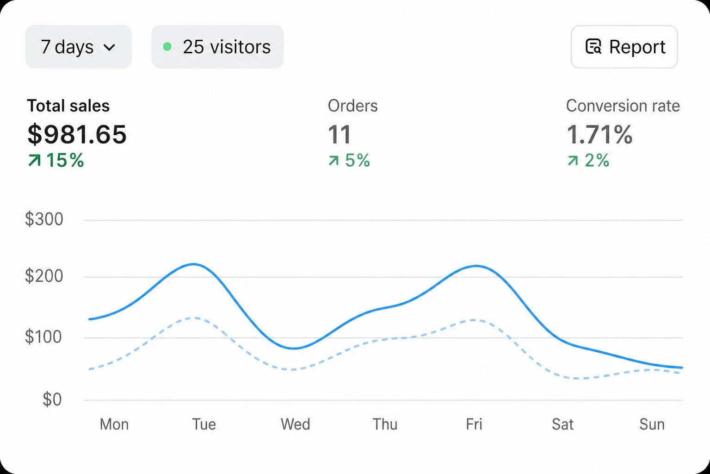
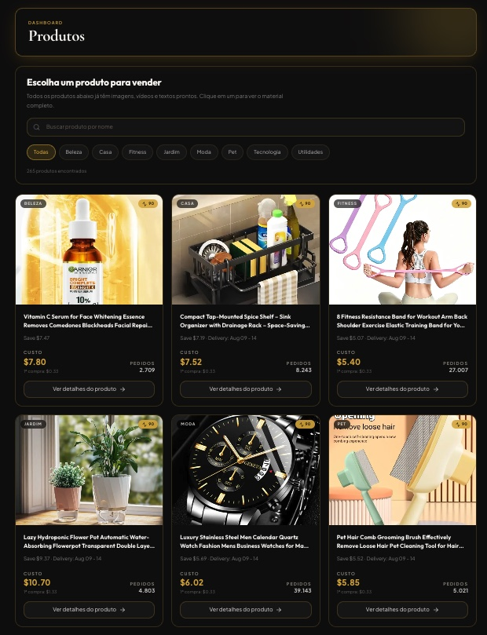

Economia · Renda em dólar
Aposentado ou não: brasileiros 30+ estão recebendo em dólar morando no Brasil, sem sair de casa — e com risco R$ 0
Um brasileiro que decidiu abandonar a faculdade de direito após perceber uma forma de receber em dólar morando no Brasil, pelo computador ou pelo celular.
Durante dois anos cursando faculdade de direito, Matheus Davila se viu em dívida com a faculdade e precisava arrumar uma forma de pagar a mensalidade. Afinal, nenhum emprego aceitava ele por conta da carga horária que precisava dedicar ao curso.
“Eu trabalhava 16 horas por dia para conseguir pagar a minha faculdade, e mesmo assim não ganhava o suficiente para manter todas as contas em dia. Eu fui obrigado a procurar outra alternativa.”
— Matheus Davila
O que ele descobriu após se ver perdido e sem saída?
Enquanto estudava um processo do consumidor, Matheus decidiu pesquisar qual era o país mais consumidor do mundo. E encontrou a seguinte manchete:
Ele entendeu que americanos compram online sem pensar duas vezes — e que quem entrega esse produto na porta da casa do americano são fornecedores.
Depois de muitas pesquisas, Matheus Davila achou os 7 produtos mais comprados pelos americanos.
“É, eles são maluco por esses produtos. Isso mostra que eles são muito consumidores.”
Funciona para quem já passou dos 30?
Segundo Matheus Davila, essas pessoas são as que de fato entendem a importância de ganhar em uma moeda mais forte.
“Quase nenhum jovem sabe o que é ter que alimentar uma casa com 3 ou mais pessoas, e cada vez que vai no mercado as coisas estão mais caras. Ou seja, só o adulto real sabe a importância de ganhar em uma moeda mais forte e gastar em uma moeda mais fraca, que é o real.”
E ele ainda faz um apelo:
“Eu fico muito triste em ver pai de família imigrando para os Estados Unidos, longe da família, para tentar ganhar em uma moeda mais forte trabalhando na obra — e só assim dar qualidade de vida para quem tanto ama.
Eu quero muito que eles vejam essa matéria…”
Quanto Matheus Davila ganha por mês?
Nos primeiros 6 dias, foram 620 dólares — cerca de R$ 3.190. Mais do que ele ganhava trabalhando 12 horas por dia como CLT de uma loja de iPhone. No primeiro mês, fechou com 3.350 dólares, cerca de R$ 18.740.
“Eu saí de um estudante cheio de dívida para ganhar quase igual um médico, simplesmente porque eu entendi o produto que os americanos não pensam duas vezes antes de comprar.”
Matheus nos enviou registros mostrando os ganhos dele com esses produtos.

Painéis enviados por Matheus à nossa redação. Os valores são de vendas brutas, não de lucro — o custo do produto é descontado a cada pedido.
Depois de pedirmos muito, Matheus liberou uma explicação gratuita mostrando tudo o que ele fez.
QUERO VER A EXPLICAÇÃO GRATUITA Acesso liberado · leva 2 minutosVocê não paga nada para assistir.
“As pessoas de 30 anos ou mais correm risco com isso, Matheus?” — perguntamos a ele.
A resposta:
“Não. Se corresse risco eu nem tinha começado, eu não tinha nem mais dinheiro para perder.
É por isso que você não compra esse produto antes de vender. Somente depois que o americano passa o cartão chega uma notificação para o fornecedor entregar — e você fica com o seu lucro de 39 dólares, que é igual a R$ 200,00, sem precisar fazer nada.
O trabalho difícil é do fornecedor. E graças à IA, nem inglês você precisa falar: é tudo no automático.”
Como funciona essa “Máquina de Gerar Dólares”
É o nome que Matheus Davila deu a esse sistema. Na prática, é um catálogo online montado através de uma ordem entregue ao ChatGPT. O americano recebe esse catálogo já traduzido, com os produtos que têm 87,8% de procura.
- Você monta o catálogoO ChatGPT recebe uma ordem pronta e monta o catálogo online, já traduzido para o inglês.
- O americano escolhe e compraEle seleciona o produto e passa o cartão. Nada sai do seu bolso antes disso.
- O fornecedor entregaChega a notificação e o fornecedor envia direto para a casa do cliente.
- A diferença cai para vocêSe o produto custa US$ 10 e você anuncia por US$ 50, os US$ 40 vão para a sua conta, já convertidos em real.

Você não precisa morar nos Estados Unidos para vender para americanos
Você não toca no produto, não guarda em casa e ainda por cima não vai em transportadora.
“Muita gente acha que para ganhar em dólar tem que se tornar um imigrante e trabalhar braçal. A verdade é que eu demoro uns 30 minutos para configurar esse catálogo. Depois disso começo a receber vendas em dólar enquanto foco na minha vida.”
- Sem falar outro idioma
- Sem entender de marketing
- Sem aparecer em vídeo na internet
- Sem comprar produto antes de vender
Como ativar esse catálogo, que é uma verdadeira máquina de gerar dólar?
Devido à grande repercussão, entramos em contato com Matheus para colher mais informações para os nossos leitores.
E, gentilmente, mesmo em viagem, ele nos atendeu e disse que não tinha muito tempo para ensinar 1 a 1, mas que iria disponibilizar uma aula gratuita mostrando o passo a passo para qualquer pessoa ativar esse catálogo pelo celular e receber em dólar ainda essa semana.
“Olha, vou disponibilizar sim essa aula. Como eu disse, me entristece ver brasileiro achando que a única forma de ganhar em dólar é trabalhando no sol quente nos Estados Unidos. Confesso que já pensei isso, mas esse catálogo me salvou: eu quitei todas as minhas dívidas e ainda aposentei meus avós.”
— Matheus Davila
Para assistir à aula exclusiva e gratuitamente, basta clicar no botão abaixo.
ASSISTIR À AULA GRATUITA AGORA Acesso imediato · sem pagar nadaVagas limitadas para essa turma de acesso gratuito.